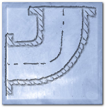
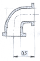
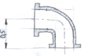

H. Tile design
|
In the brand new HQ of the WSA, construction subcontractors are working on the last tweaks, like tiling the personal hygiene facilities (bathrooms). The overall design concept dictates that the wall patterns must match the purpose of each room, so the selected bathroom tile design features pipe sections. Each tile has exactly one pipe printed on it:
|

source: http://www.photos-public-domain.com/ 2011/12/30/blue-bathroom-tile- with-swirl-pattern-texture/ |
Tiles can be rotated but not mirrored.
When designing tiling layouts, there are some psychological constraints as well. Imagine what guests would think seeing a decorative pipe system that just ends abruptly - it may make them imagine that the WSA organization is not a single, seamless, organically interconnected system. To avoid such misunderstandings, the pipeline must not have ends; which is possible by designing a large single loop that covers the wall.
Furthermore, users well-versed in algorithmic security may object to seeing long repeated patterns in such loops, because those would suggest that entropy in the WSA is low. How could they trust the WSA's cryptography and the randomness of its keys if the WSA can't even build a random enough tile layout?
Your task is to help the designer to tile the wall so that all available space is covered by tiles, the pipes on the tiles form a single loop, and the longest repeating pipe sequence of the design is as short as possible.
Input
Three integers, W, H and L, where W and H are the width and height (measured in number of tiles) of the wall and L is the length of the longest repeating pipe line we want to achieve (see below).Output
The first line is two integers W, H (matching width and height in the input). The follwing H lines form a large "ASCII art" representation of the tile figures, one character per tile, each line containing W characters. The meaning of the characters:
| character | F | 7 | J | L | - | I |
|---|---|---|---|---|---|---|
| figure |  |  | 
| 
| 
| 
|
So each tile figure is a pipe section with some orientation. The pipe sections have a flow direction as well that is not represented in the plan, but will be visible on the final design, where tiles will be placed so that the flow can go around the wall in positive direction.
A pipe line is a sequence of neighboring tiles with connected pipe sections following the direction of the flow. If the pipe line connects back to itself then it's a loop. All the tiles should form a single loop, but the longest repeating pipe line (LRPL) must be as short as possible (ideally L or less). A rotated version of the pipe line is considered to be a repetition, but a mirrored one is not. Repetitions can overlap.
Finding a solution with longer than L repetitions will earn less than 100 points by the following formula:
Scoring
if LRPL ≤ L then SCORE = 100else if LRPL ≥ L+25 then SCORE = 0
else SCORE = round(0.16*(L+25-LRPL)2)
Example input8 8 5 | Example output8 8 F--7F--7 IF7IL7FJ IIIL-JL7 IIL-7F-J IIF7IIF7 LJILJIII F-JF7LJI L--JL--J |
The longest repeating pipe line in the example is 6 (hilighted), so its score is 92.
Note that the hilighted part below is not a rotated and overlapping 8 length repetition, because pipes are directed.
8 8 F--7F--7 IF7IL7FJ IIIL-JL7 IIL-7F-J IIF7IIF7 LJILJIII F-JF7LJI L--JL--J